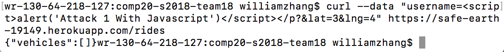
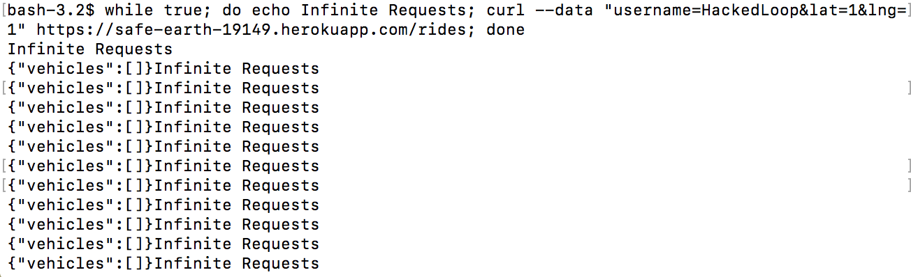
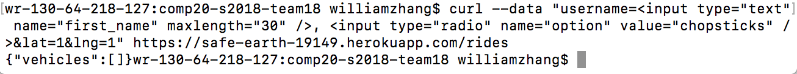

I was hired to find at least 3 vulnerabilities in my partners code by analyzing my partners code from assignments 2 and 3.
To test my partners application for vulnerabilities, I used curl, modifications to query string and bash.
The three major vulnerabilities that I have identified in my partners code were issues associated with Cross Site Scripting (XSS) and input choices. XSS enables attackers to inject client-side scripts into web pages viewed by other users. A cross-site scripting vulnerability may be used by attackers to bypass access controls such as the same-origin policy. With the use of use of bash, I was able to send an infinite loop of requests to the server. This would in most cases create very large undesired traffic in the server or crash the server. The last issue I identified was also similar to that of the second issue in that they both are due to the absence of server-side input validation. By using curl, I was able to bypass the input restrictions quite easily. Since the inputs that I entered were not validated, I was able to enter undesired inputs.
Vulnerability to Cross Site Scripting (XSS):
https://safe-earth-19149.herokuapp.com
High
For the XSS vulnerability, I was able to just simply curl some JavaScript code to display an alert message on the web page. The essence of this issue is not the fact that the attacker can display alert messages on the web page, but the fact that the bigger issue of XSS is not fixed. This vulnerability is high is severity as the attacker it allows the attacker to present all users with fraudulent web content, steal cookie information, make malicious code injections and send annoying messages
I would recommend removing the ability for data to be interpreted as code. Pay attention to the angle brackets. Change < to < and Change > to >.
Lack of Server-Side Input Validation:
https://safe-earth-19149.herokuapp.com
High
Since it is possible to send an infinite loop of requests to the server, the server can become overloaded and crash. By using bash, I created a never ending while loop that sends requests after requests through curl. If I leave this running for a long time, it will probably crash the server. I do not actually have proof for this because I didn’t want to crash any servers, but I do have a picture of the code written on bash and it infinite looping.
Try to figure out a way for the server to only read a request once by checking the sent parameters. We have not discussed how to solve this type of problem in class, but personally I would try to check the time interval between the requests. If the time stamp between two requests are too close and exactly the same, I would tell the server to ignore the second request.
Bypassing Restrictions on Input Choices:
https://safe-earth-19149.herokuapp.com
Medium
Without adequate input validation, I was able to attack the web page by replacing the username text with a text bar and a multiple-choice option. Similar to that of XSS, this issue can lead to the attacker displaying unwanted input forms onto your web page.
To prevent this from happening, implement so server-side input validation mechanisms.
In conclusion, the web developers should be careful when they are working with user input data. User input data allows the attacker the freedom to bypass restrictions on input choices if adequate server-side input validation is not implemented. User input data also allows the user to use XSS methods to conduct attacks if the developer did not pay enough attention to angle brackets.
1. https://tuftsdev.github.io/WebProgramming/notes/web_security.html
2. https://www.wikihow.com/Use-Bash
3. https://www.hacking-tutorial.com/hacking-tutorial/basic-hacking-via-cross-site-scripting-xss-the-logic/#sthash.EuMTATHd.dpbs